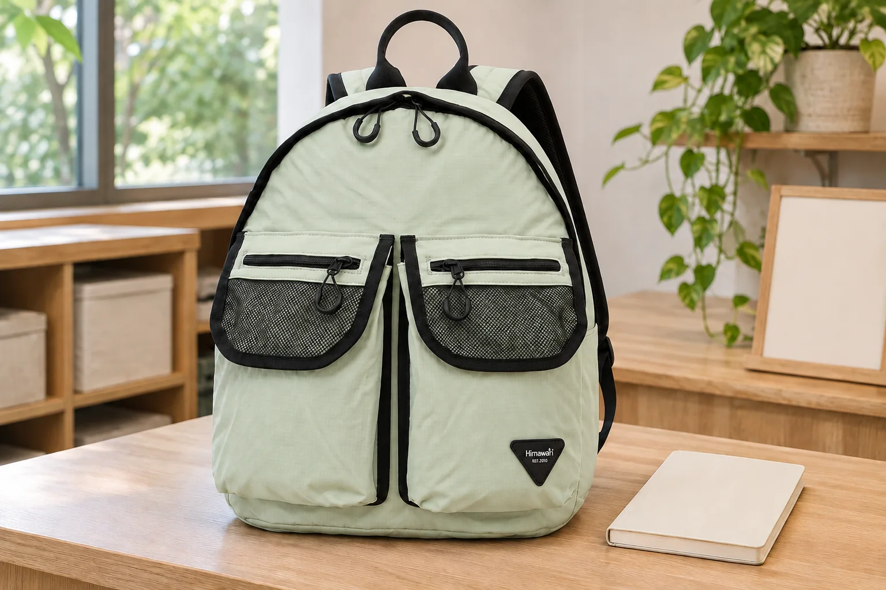
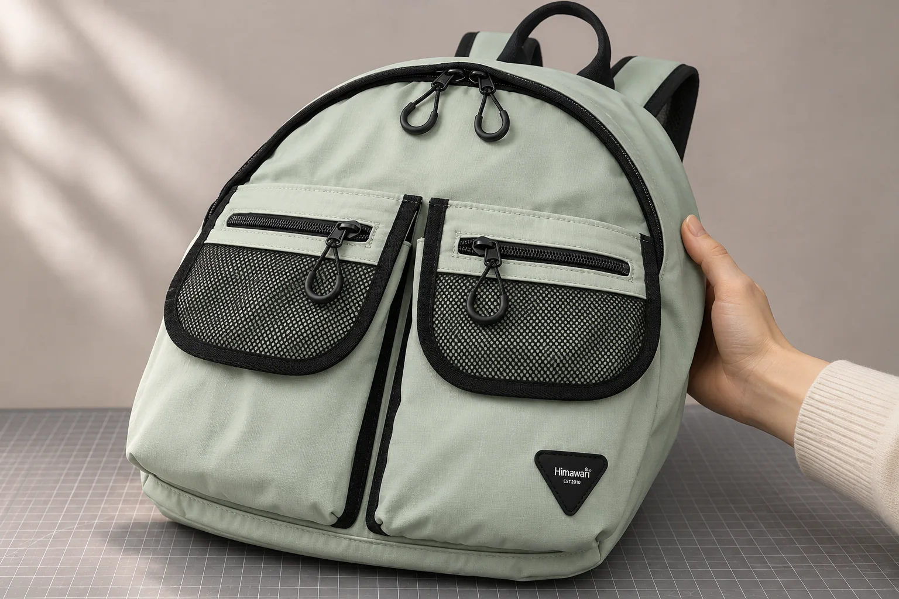
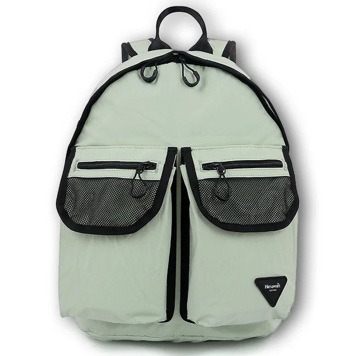

백팩 지퍼를 닫았는데 가운데가 다시 벌어진다면

백팩 지퍼의 손잡이를 끝까지 옮겼는데 그 뒤쪽이 다시 벌어집니다. 손잡이는 움직였으니 닫혔다고 생각하기 쉽지만 손잡이가 지나간 자리와 지퍼가 맞물린 상태는 따로 봐야 합니다. 반대로 지퍼가 한곳에서 멈추는 증상도 있습니다. 둘을 모두 뻑뻑하다고 설명하면 수선을 문의할 때 중요한 차이가 빠집니다. 이번에는 닫는 방향으로 움직인 뒤에도 입구가 남는 경우를 살펴봅니다.
사진의 No.1230 민트는 둥근 큰 입구와 앞면의 작은 지퍼 두 개가 보이는 백팩입니다. 공개 외부 크기는 가로 32 × 세로 40 × 폭 18cm이며 겉감은 나일론, 안감은 폴리에스터로 안내돼 있습니다. 여기 실린 제품은 여밈의 위치를 설명하는 예시입니다. 사진 속 가방에 지퍼 고장이 있다는 뜻은 아니며 아래 증상을 이 모델의 특성으로 소개하는 것도 아닙니다.
손잡이가 멈췄는지, 지나간 뒤 벌어졌는지
가방 앞에 앉아 입구를 닫던 장면을 떠올려봅니다. 손으로 잡는 고리와 그 아래 지퍼 선을 따라 움직이는 몸체가 있습니다. 고리가 움직였다고 느껴도 실제 몸체가 같은 거리만큼 이동했는지, 몸체가 지나간 선이 이어져 있는지는 다른 관찰입니다. 문의에서는 손잡이라는 말 하나 대신 어느 부분이 움직였는지 설명하면 좋습니다. 부품의 정식 명칭을 몰라도 두 위치가 보이는 사진이면 차이를 전할 수 있습니다.
YKK의 지퍼 구조 설명은 맞물리는 부분, 그 맞물림을 여닫는 슬라이더, 원단 부분인 테이프를 구별합니다. 슬라이더 내부를 지나는 양쪽 부품이 맞물리며 지퍼가 닫히는 원리도 소개합니다. 따라서 손잡이를 움직였다는 사실만으로 닫힘을 확인할 수는 없습니다. 이 자료는 일반 원리를 이해하기 위한 것이며 No.1230의 지퍼 제조사나 부품 규격을 확인한 자료는 아닙니다.
가령 손잡이가 한 지점에서 멈추고 원단이 함께 끌려온다면 이미 지나간 뒤 가운데가 열리는 경우와 모습이 다릅니다. 두 증상을 한 번에 재현하려고 여러 방향으로 힘을 주지 않습니다. 지금 보이는 상태에서 어느 선이 이어져 있고 어느 선이 떨어져 있는지 남기면 됩니다. 원인을 찾기 위해 고장을 더 크게 만들 필요는 없습니다. 사진을 위해 손잡이를 억지로 끝까지 이동시키지 않아도 상담할 정보는 남습니다.

벌어진 자리를 다시 닫기 전에 남길 것
내용물을 다른 곳에 옮길 수 있다면 가방을 안정된 면에 둔 뒤 입구에 걸린 물건을 먼저 분리합니다. 이때도 열린 틈을 넓혀 짐을 밀어 빼기보다 현재 꺼낼 수 있는 입구를 이용합니다. 내용물이 남아 있다면 남아 있는 상태를 그대로 기록합니다. 두꺼운 파일을 넣은 상태였는지, 비운 뒤에도 같은 모양인지처럼 실제로 확인한 조건을 구분하면 됩니다. 짐이 많았다는 사실만으로 고장의 원인을 과적이라고 단정하지 않습니다.
벌어진 곳만 아주 가까이 찍으면 어느 지퍼인지 알아보기 어렵습니다. No.1230처럼 큰 입구와 앞주머니 지퍼가 함께 있는 가방이라면 전체 앞면에서 해당 입구를 짚은 사진이 먼저 필요합니다. 이어서 손잡이와 그 뒤의 벌어진 선이 한 화면에 보이도록 남깁니다. 맞물리는 부분의 누락이나 원단의 찢김이 눈에 보이면 그 모습도 별도로 기록합니다. 보이지 않는 내부를 확인하려고 몸체를 벌리지는 않습니다.
이 기록은 고장 부위를 확정하는 진단서가 아닙니다. 같은 결과처럼 보여도 슬라이더와 맞물리는 부품, 주변 원단 가운데 무엇을 손봐야 하는지는 사진만으로 결정되지 않을 수 있습니다. 사용자는 현재 상태를 다른 사람도 구별할 수 있게 전하면 됩니다. 잘 닫히던 때와 달라진 시점, 특정 입구에서만 생기는지, 사용자가 이미 해본 처리가 무엇인지가 사진의 빈칸을 채웁니다.

손잡이만 바꾸면 되는 수선인지 묻기
손으로 잡는 고리가 부러진 경우에는 잡을 부품이 문제일 수 있습니다. 그러나 고리가 그대로 있는데 지나간 지퍼 선이 벌어진다면 새 고리를 다는 것으로 맞물림까지 해결된다고 볼 근거는 없습니다. 고리와 슬라이더를 모두 손잡이라고 부르면 교체할 대상도 엇갈릴 수 있습니다. 상담할 때에는 잡는 고리만 교체하는 것인지, 이동하는 몸체나 지퍼 줄까지 확인하는 것인지 답변의 범위를 읽습니다.
인터넷에서 비슷하게 생긴 부품을 찾았더라도 크기와 모양만 보고 주문하지 않습니다. YKK의 구조 설명에서도 부품의 형태와 치수는 맞물림에 관계하는 요소입니다. 그렇다고 특정 숫자가 적힌 슬라이더를 모든 같은 크기 지퍼에 쓸 수 있다는 뜻은 아닙니다. No.1230에 쓰인 규격과 교체 부품의 호환성은 별도로 확인해야 합니다. 원래 부품의 표기가 보이면 사진으로 남기되 표기가 없으면 미확인이라고 전달하면 됩니다.
펜치로 몸체를 눌러 좁히거나 지퍼 끝을 잘라 부품을 끼우는 방법을 이 가방의 수선법으로 제시할 수는 없습니다. 부품과 원단을 어떻게 다뤄야 하는지 확인되지 않았기 때문입니다. 윤활제를 넣는 일도 닫힌 뒤 벌어지는 증상의 원인을 구별하는 작업과는 다릅니다. 해당 제품에 허용된 처리가 있는지 먼저 확인하고 답변을 받기 전 상태를 보존해야 수선 가능 범위도 정확히 물을 수 있습니다.
수선 뒤 확인할 조건도 처음 증상과 연결합니다. 손잡이가 이동하는지만 보는 대신 안내받은 방식으로 여민 선이 이어지는지 살펴볼 필요가 있습니다. 확인할 짐의 양과 사용할 입구는 수선처의 안내에 맞춥니다. 모든 물건을 다시 넣어 강하게 당기는 시험을 사용자가 임의로 정할 이유는 없습니다. 같은 지퍼의 어느 부분을 수선했는지 기록해 두면 다음에 설명할 부위도 분명해집니다.
백팩을 닫는 동작의 끝은 손잡이가 목적지에 도착하는 순간과 같지 않을 수 있습니다. 지퍼 선이 이어져 있는지, 이동하는 몸체와 잡는 고리가 각각 어떤 상태인지가 남습니다. No.1230의 앞주머니와 큰 입구를 따로 짚어보듯 문제가 생긴 여밈 하나를 특정해 보세요. 수선 문의가 구체적일수록 움직이지 않는 지퍼와 닫혀도 벌어지는 지퍼를 같은 처방으로 다루지 않게 됩니다.
일반 구조와 제품 표기의 참고 자료: YKK 지퍼의 구성과 맞물림 원리.